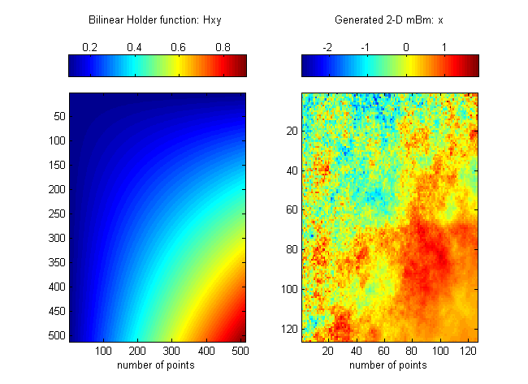
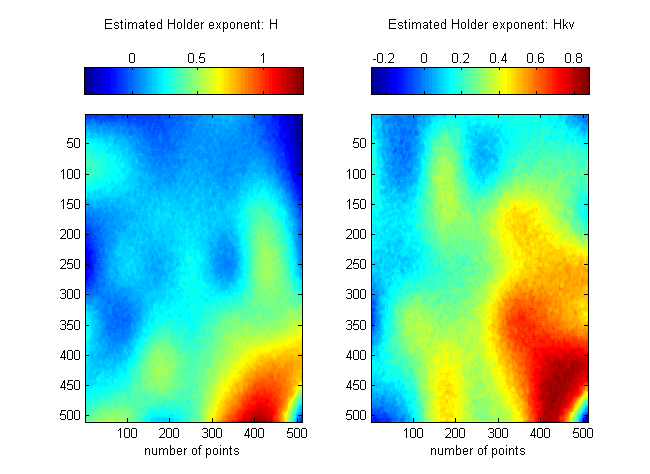
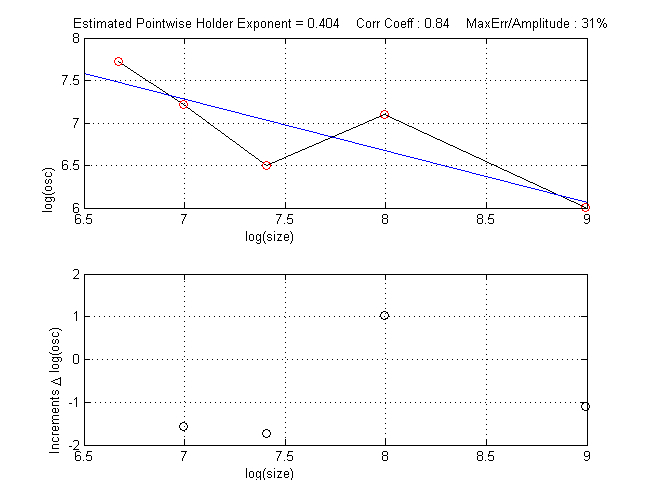

| FRACLAB Functions |
|
Computes a Generalized Quadratic Variations based estimation of the Holder exponent for a 2D signal (an image)
[H,G] = estimGQV2DH(x,gamma,delta,kv)
[H,G] = estimGQV2DH(...,'Regression type')
[H,G] = estimGQV2DH(...,'Propertyname',Propertyvalue)
[H,G] = estimGQV2DH(x,gamma,delta,kv) Estimates the Holder function, H, and the scale factor, G,
of the input image, x, using a least square regression. The paramaters gamma and delta
are real values in (0:1) which characterize the neighborhood of each point where the exponent is computed.
The vector kv gives the values of the succesive sub-samplings used for the computations of the GQV.
For each point the Holder exponent is estimated using a neighborhood of points.
|
The size of the neighborhood is defined by [Pmax - Pmin] |
[H,G] = estimGQV2DH(...,'Regression type') Estimates the Holder function, H, and the scale factor, G, using a specific type of regression. The Regression Type can be choosen from the list below :
| Specifier | Regression Type |
|---|---|
| 'ls' | Least Square (default) |
| 'linf' | Lower Limit |
| 'lsup' | Upper Limit |
| 'ml' | Maximum Likelihood |
| 'lapls' | Lepskii Adaptive |
| 'wls' | Weighted Least Square |
| 'pls' | Penalized Least Square |
| 'noreg' | No Regression mode |
[H,G] = estimGQV2DH(...,'Propertyname',Propertyvalue) returns the estimators H and G applying the specified property settings. The Property setting can be choosen from the list below:
| Property | Purpose |
|---|---|
| 'timeinstant' |
The Single Time Exponent estimation is computed for a specific time instant. A graphic window
is displayed showing in abscissa the log-scale, and in ordinate the log of the oscillations.
This allows to select a region in the log-log plot where the points on this graph are well aligned.
The regression line is displayed in blue and the value of the estimated exponent is display at the top.
The timeinstant value must be included in the interval [1:length(x),1:length(y)] |
| 'zones' |
A Segmentation in a specific number of zones is realized on the estimation obtained by
regression. Then, the Holder estimation is aligned on the trend of the mean values of the segmented signal.
If 'zones' is not specified, the default value is zones = 7. |
N = 512; tx = linspace(0,1,N); ty = linspace(0,1,N);
[X,Y]=meshgrid(tx,ty); f = inline('0.1+0.8*tx.*ty','tx','ty'); Hxy = f(X,Y);
x = mBm2DQuantifKrigeage(N,Hxy,25);
figure; subplot(1,2,1); imagesc(Hxy);
colorbar('northoutside'); xlabel('number of points'); hold on;
subplot(1,2,2); imagesc(x); colorbar('northoutside'); xlabel('number of points');


Hst = estimGQV2DH(x,0.8,1,[1:1:5],'timeinstant',[50,150]);

[1] A. Ayache, J. Lévy-Véhel, "Identification of the pointwise holder exponent of generalized multifractional brownian motion",
Stochastic Processes and their Applications, Vol. 111 (2004) 119-156.
[2] O. Barrière, "Synthèse et estimation de mouvements Browniens multifractionnaires et
autres processus à régularité prescrite. Définition du processus autorégulé multifractionnaire et applications", PhD Thesis (2007).
| |
estimGQV1DH | estimOSC1DH | |